게임 검색
게임 제목뿐 아니라 ROM 파일명으로도 검색할 수 있습니다. 한국어 검색은 띄어쓰기를 무시하고, 영문 검색은 대소문자를 구분하지 않도록 개선됐습니다.
0.289.4 ~ 0.289.6게임 목록부터 IPS 패치, RomData, 조이스틱, 화면 효과, 게임 내 공략까지. EKMAME / EKGUI의 주요 기능을 한곳에 정리한 웹 사용설명서입니다.
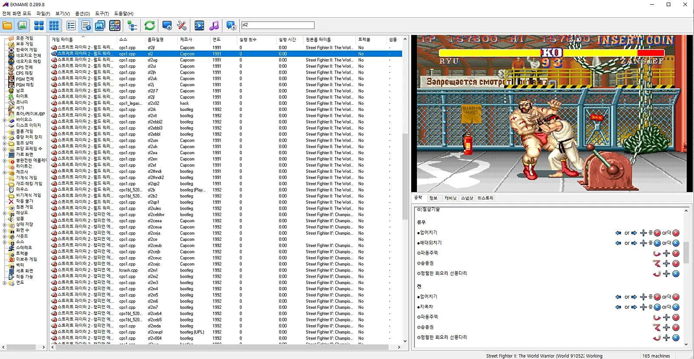
먼저 확인하세요. 이 문서는 0.289.3~0.289.8 배포 글과 스크린샷을 기준으로 작성했습니다. 실제 메뉴 위치는 사용 중인 버전에 따라 다를 수 있습니다. 설치 파일이나 ROM/CHD 파일은 제공하지 않습니다.
압축을 풀고, 게임 폴더를 지정하고, 목록에서 실행하는 기본 흐름입니다.
배포된 EKGUI / EKMAME 패키지를 준비하고 압축을 해제합니다. 분할 압축 파일은 구성 파일을 함께 준비해야 합니다.
옵션 → 디렉터리에서 ROM 경로를 확인하거나 추가합니다. 기존 경로를 사용한다면 실제 폴더 위치와 일치하는지 확인하세요.
필요한 ROM 검사를 실행한 다음 왼쪽 폴더에서 게임을 찾습니다. 게임 목록의 항목을 더블클릭해 실행할 수 있습니다.
기존 버전에서 업데이트한다면 개별 게임의 INI·CFG와 사용자 데이터를 먼저 백업하세요. 특히 0.289.7부터 폴더 구조가 바뀌었습니다. 데이터 이전 안내 보기
왼쪽에서 분류를 선택하고, 가운데에서 게임을 찾고, 오른쪽에서 미리보기와 정보를 확인합니다.
게임 제목뿐 아니라 ROM 파일명으로도 검색할 수 있습니다. 한국어 검색은 띄어쓰기를 무시하고, 영문 검색은 대소문자를 구분하지 않도록 개선됐습니다.
0.289.4 ~ 0.289.6목록·상세·아이콘·카드형 보기와 별도의 게임 목록 전체화면 모드를 사용할 수 있습니다. 표시 형태는 버전에 따라 다릅니다.
0.289.6 ~ 0.289.7네오지오, CPS, PGM의 전체·해킹 목록과 한국어 게임 등으로 이동할 수 있습니다. 폴더 표시 여부와 순서도 조정할 수 있습니다.
0.289.3 ~ 0.289.7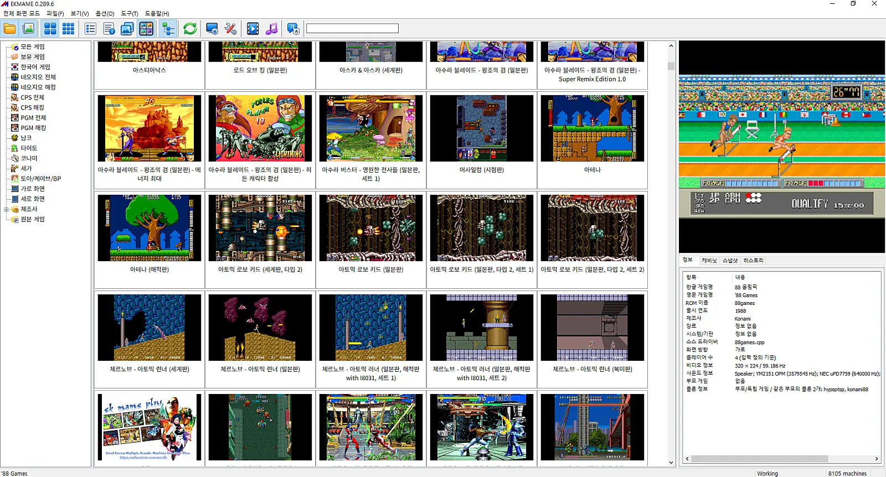
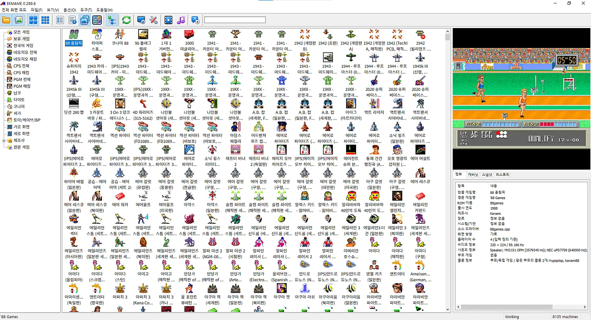
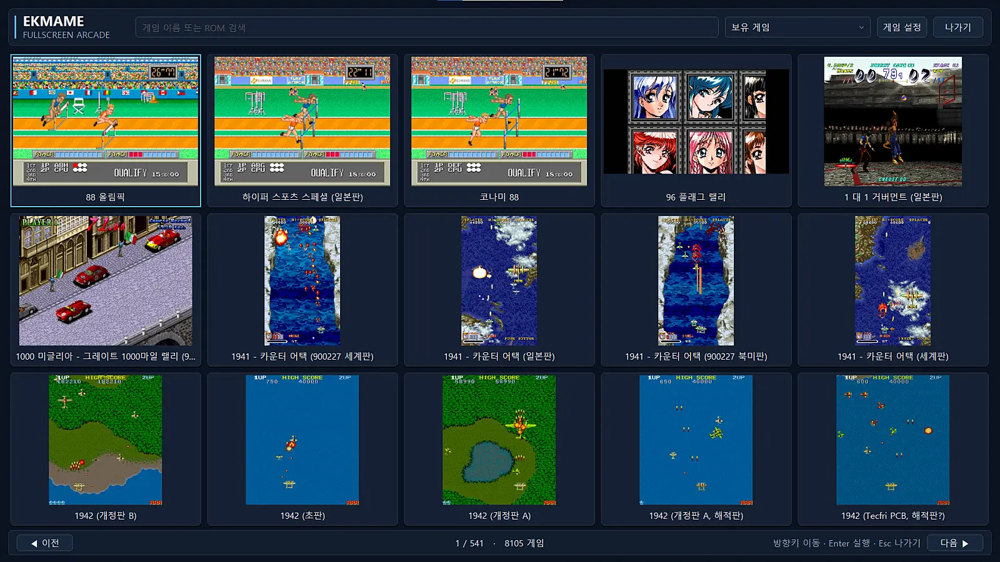
전체화면 뷰에서 MP4·MNG 동영상 미리보기를 지원하며, 인터페이스 옵션에서 실행 시 전체화면 모드로 자동 진입하도록 지정할 수 있습니다.
처음에는 전체 검사, 그 뒤에는 변경된 파일을 중심으로 빠르게 검사합니다.
초기 로딩, 정렬, 보기 전환과 ROM 검색 캐시 처리가 개선됐습니다. ZIP 파일 변경 감지와 최초 전체 검사 안내도 추가됐습니다.
F5의 기능은 화면에 따라 다릅니다. EKGUI 게임 목록에서는 ROM 빠른 검색, 게임 실행 중에는 공략 보기/감추기 단축키로 안내돼 있습니다.
원본 ROM에 IPS 패치를 적용하고, 여러 패치를 함께 선택하거나 이름을 수정할 수 있습니다.
ips 폴더에 부모롬 이름을 기준으로 패치 파일을 배치합니다. 한국어 게임 분류에 사용할 패치에는 해당 .dat 정보와 .ips가 함께 있어야 합니다.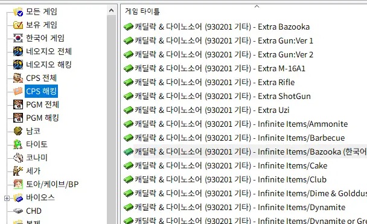
0.289.5부터 하나의 게임에 여러 패치를 함께 선택할 수 있습니다. 예를 들어 한국어 패치와 캐릭터 선택 패치를 조합할 수 있지만, 패치 변경 영역이 겹치면 함께 적용되지 않을 수 있습니다.
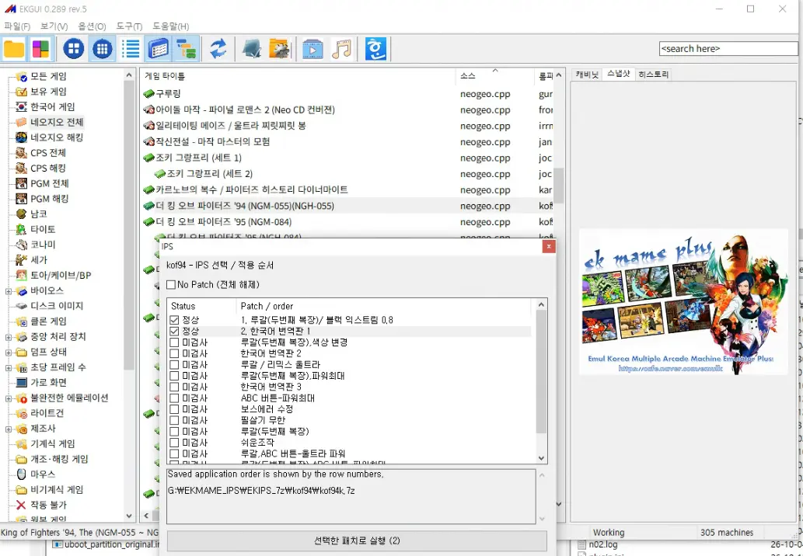
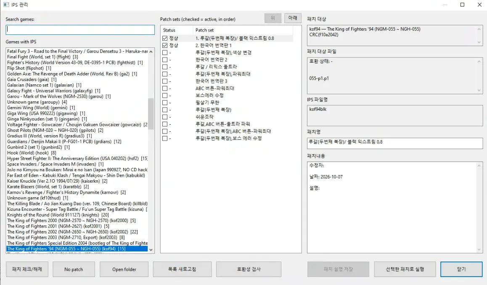
복수 패치 선택 시 상태가 정상으로 표시되지 않으면 패치 내용이 충돌할 가능성이 있습니다. 정상 조합인지 먼저 확인하세요.
IPS 관리에서 패치명을 한글로 수정하면 게임 목록에도 한글 이름을 표시할 수 있습니다. 한국어 게임 폴더에 포함하려면 패치명에 한국어 또는 한글이라는 표현을 포함하도록 안내돼 있습니다.
cde_23a.8f Uzi CRC(8f4e585e)
[en_US]
Extra Uzi (한국어 패치)예시 첫 줄에는 부모 ROM 내부 파일명, 패치 파일명, 원본 CRC 정보가 차례로 들어갑니다. 실제 값은 사용하는 패치의 데이터와 일치해야 합니다.
일부 게임은 IPS 패치 대신 외부 ROM 정의로 지원할 수 있습니다.
외부 ROM 정의 기능을 지원합니다. 게시글에는 해당 지원이 MVS 전용이라고 명시돼 있습니다.
스트리트 파이터 II 및 대시 계열 일부 게임으로 확대됐으며, CPS-B 프로필과 일부 부트레그 ROM 처리가 개선됐습니다.
모든 ROM을 지원하는 기능은 아닙니다. RomData 형식의 구체적인 작성 문법·필수 파일은 제공된 자료에 없으므로 이 설명서에서 임의로 정하지 않았습니다. 0.289.4부터 폴더 자동 생성과 IPS 목록 통합이 지원됩니다.
키 매핑과 입력 진단을 이용해 조이스틱 인식 상태를 확인합니다.
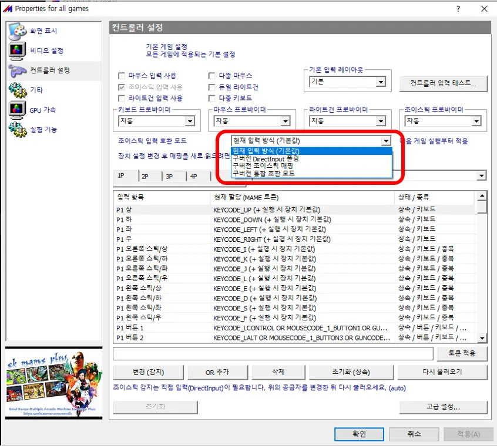
기본 및 개별 게임 설정에서 플레이어별 방향과 버튼을 설정할 수 있습니다.
0.289.4 추가조이스틱 버튼·방향·아날로그 축·POV 입력을 확인하는 진단 기능이 제공됩니다.
0.289.4 추가일부 2P 난입 문제에 대응하기 위해 구버전 DirectInput 호환 모드와 폴링·매핑 설정이 추가됐습니다.
0.289.7 추가화면 비율, 효과, 렌더링과 실험 기능을 사용하는 곳입니다.
0.289.4에서 주요 게임 설정 UI가 위 네 영역으로 재구성되고, 항목별 고급 설정과 비디오 효과·성능 옵션이 개선됐습니다. 0.289.6에서는 화면을 모니터 비율에 맞게 늘리는 와이드스크린 늘리기 옵션이 추가됐습니다.
전체화면 표시, 화면 비율, 비디오 효과 등을 필요에 맞게 조정합니다. 개별 설정이 있으면 기본 설정과 다르게 동작할 수 있습니다.
0.289.6에서 추가된 실험적 기능입니다. 효과는 그래픽카드 성능과 게임에 따라 달라지며, 모든 Model 3 게임의 원활한 실행을 보장하지 않습니다.
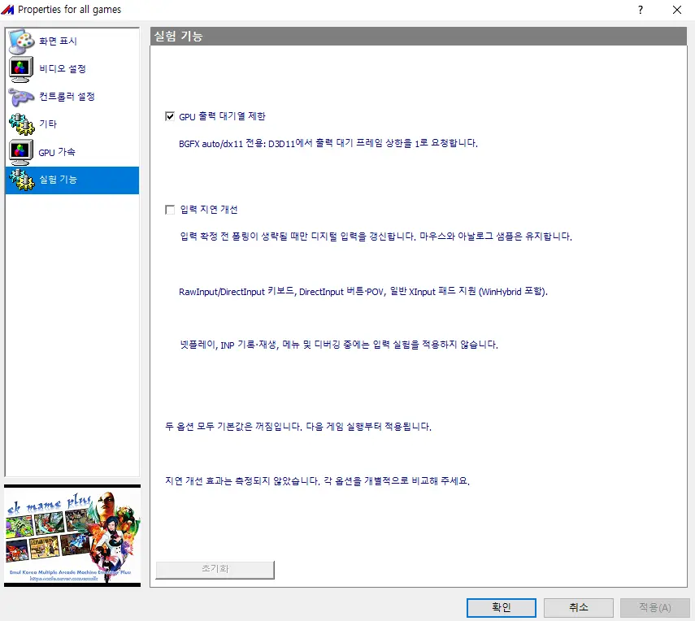
실험 기능은 기본적으로 꺼져 있습니다. GPU 출력 대기열 제한과 디지털 입력 지연 개선 옵션은 실제 효과가 검증 중이라고 안내됐습니다. 문제가 생기거나 효과가 없다면 다시 비활성화하세요.
0.289.4에서 기본 설정과 게임·소스별 INI 저장 방식이 개선됐습니다. 기본 설정을 바꿔도 적용되지 않는다면 과거에 생성된 개별 게임 INI가 우선하는지 문제 해결에서 확인하세요.
게임을 고를 때 스냅샷과 동영상을 보고, 아트워크를 미리 확인할 수 있습니다.
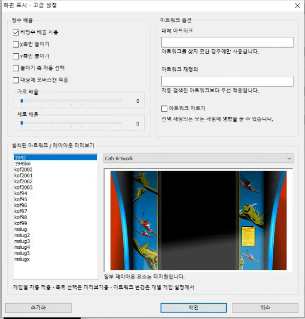
0.289.7부터 오른쪽 화면이 동영상 미리보기와 게임 정보 영역으로 나뉘고, 두 영역의 높이를 조절할 수 있습니다. 한글명·영문명·제조사·연도 등의 상세 정보가 표시됩니다.
전체화면 게임 목록에서도 MP4와 MNG 동영상 미리보기가 지원됩니다.
Artwork/mp4Artwork/mng각 형식의 동영상 파일은 해당 폴더에 배치하도록 안내돼 있습니다.
미리보기 파일의 이름, 지원 확장자 전체 목록, 필수 압축 형식은 이번 자료만으로 확정할 수 없어 별도로 기재하지 않았습니다.
0.289.8에서 공략 탭과 게임 실행 중 커맨드 가이드 표시 기능이 추가됐습니다.
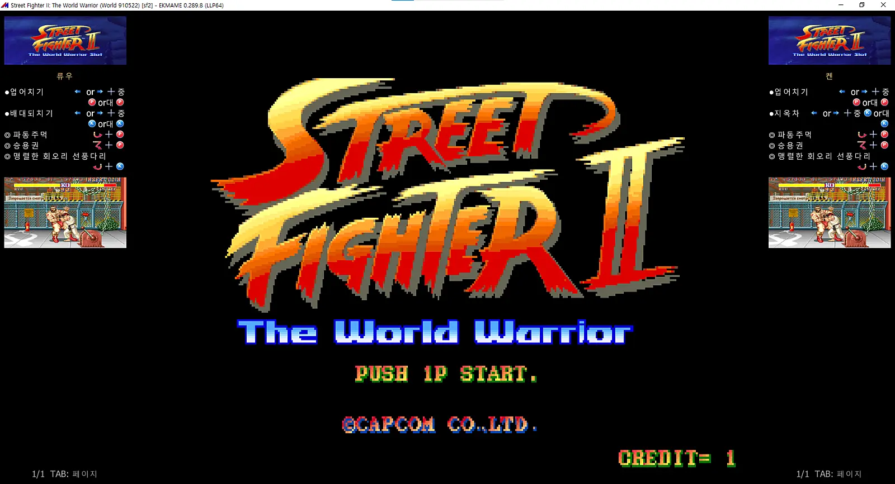
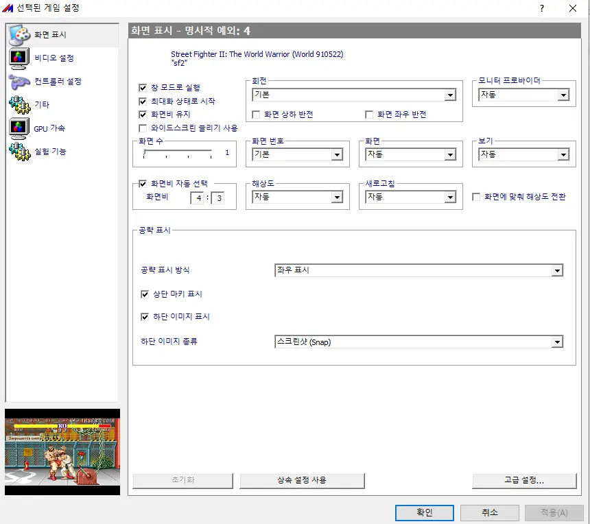
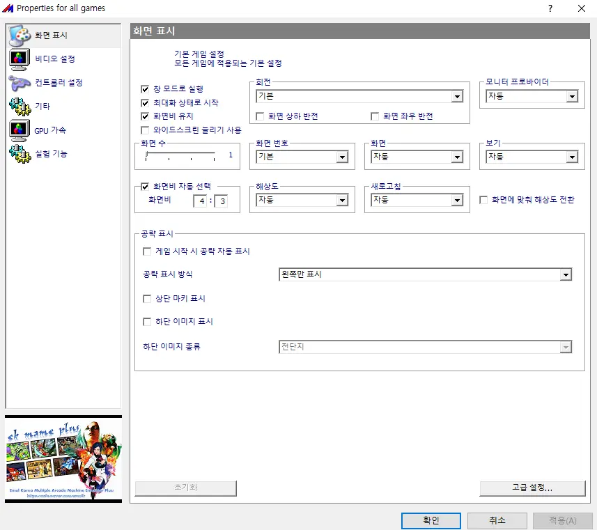
공략의 자동 표시 여부, 화면 배치, 상단·하단 마키 표시, 이미지 종류 등을 기본 설정 또는 개별 게임 설정에서 조정할 수 있습니다. 게임 내부의 설정 메뉴에서 바꾸면 해당 개별 게임 설정으로 저장됩니다.
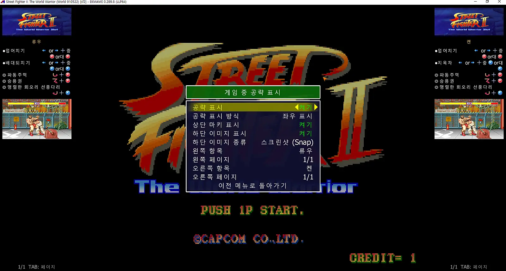
마키·스냅샷·플라이어 파일이 존재하면 공략과 함께 표시할 수 있습니다. 해당 이미지가 없어도 공략 자체는 표시되도록 안내돼 있습니다.
0.289.7부터 배포 폴더 구조가 변경됐으므로, 구버전 데이터를 자동으로 옮겨주지 않습니다.
중요: 기존 데이터는 자동 이전되지 않습니다. 업데이트하기 전에 ROM, 설정, 저장 데이터와 아트워크를 백업한 뒤 새 폴더 구조에 맞춰 직접 옮겨야 합니다.
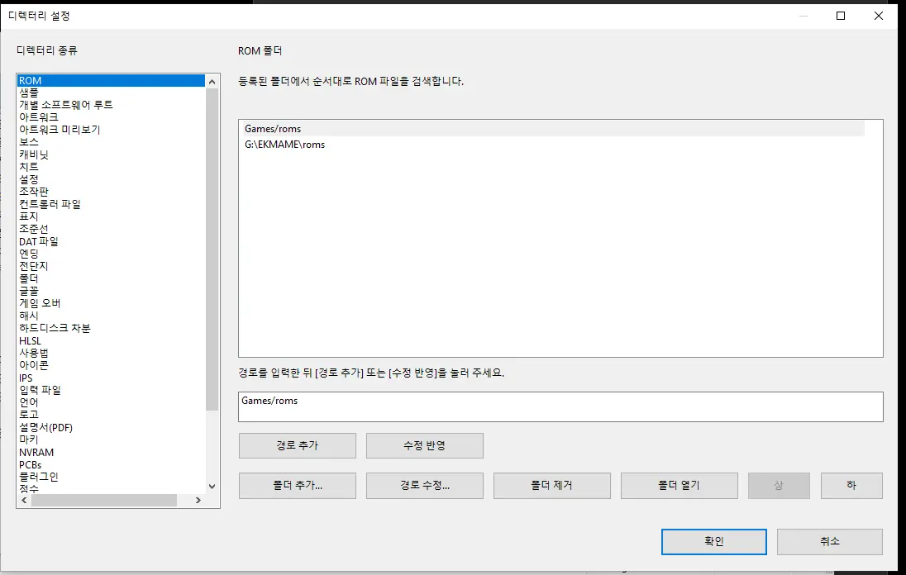
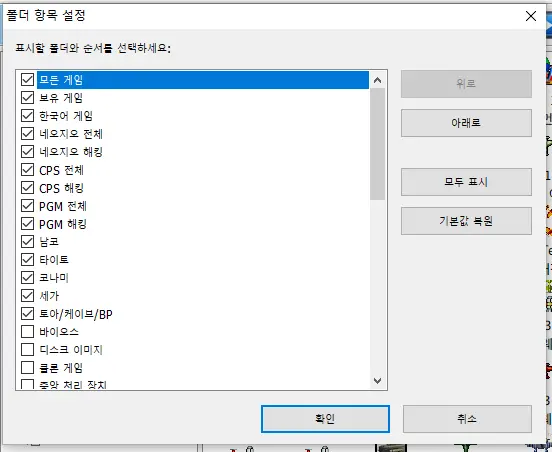
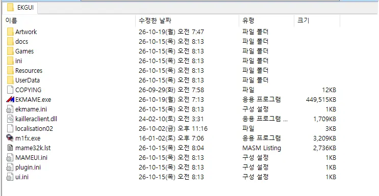
Artwork/Games/ini/Resources/UserData/파일의 실제 저장 위치는 배포 패키지와 디렉터리 설정을 우선 확인하세요.
업데이트 공지와 개발자 답변에서 확인된 주의 사항을 정리했습니다.
구버전에서 생성된 개별 게임 INI 설정이 기본 설정보다 우선할 수 있습니다. 0.289.3 공지에는 기존 루트 및 ini/mame.ini를 사용하지 않는다고 안내돼 있습니다.
기존 설정을 먼저 백업한 뒤 해당 게임의 개별 INI가 값을 덮어쓰는지 확인하세요. 초기화하면 사용자별 설정도 사라질 수 있으므로 일괄 삭제는 신중히 결정해야 합니다.
0.289.4에서 한글 검색이 추가됐고, 0.289.6에서 공백 무시·영문 대소문자 무시·ROM 파일명 검색이 개선됐습니다. 사용하는 버전을 확인하세요.
한국어 IPS 패치 게임은 .dat 정보와 패치명이 올바르게 등록돼 있는지도 확인해야 합니다.
0.289.4 입력 진단과 0.289.7 구버전 DirectInput 호환 설정으로 상태를 비교할 수 있습니다. 일부 사용자 사례는 장치별로 재현 여부가 달랐으며 완전 해결을 확인할 수 없었습니다.
플레이어별 버튼 매핑, 스타트 버튼 중복 설정, 입력 테스트 결과를 순서대로 확인하세요.
0.289.3에서 비디오 옵션 미적용 문제를 수정했다고 안내했습니다. 구버전 INI가 남아 있는지, 기본 설정과 개별 설정이 충돌하는지 확인하세요. 0.289.4에서 저장 방식도 추가로 개선됐습니다.
새 폴더 구조로 파일을 직접 이동했는지, 옵션 → 디렉터리 경로가 새 위치인지 확인하세요. MP4와 MNG는 각각 Artwork/mp4, Artwork/mng 경로로 안내돼 있습니다.
필수 기능이 아닙니다. 자료에는 기본 비활성화이며 효과를 검증 중이라고 명시돼 있습니다. 안정적인 사용을 원한다면 기본값을 유지하고 필요한 경우에만 한 항목씩 비교하는 편이 좋습니다.
이번 문서에서 다룬 기능의 도입·개선 시점을 빠르게 찾아보세요.
게임 목록 공략 탭, 실행 중 캐릭터별 가이드, F5/F8/F9 조작, 해킹롬 제외 필터, 한글 경로 호환성 개선.
전체화면·카드·아이콘 보기, 게임 정보와 미리보기 분할, 폴더 순서, 구버전 입력 호환, 디렉터리 개선, 폴더 구조 변경.
게임 목록·ROM 스캔 성능, 검색 조건 확대, IPS 표시 개선, 와이드스크린 늘리기, Model 3 GPU 가속 실험 기능.
게임별 BIOS 선택, 여러 IPS 패치 선택·상태 확인, 아트워크 미리보기.
다수의 해킹롬 추가, RomData, 한국어 검색, 1~4P 키 매핑, 입력 진단, 설정 UI·INI 상속 개선.
해킹 IPS 목록과 한국어 분류, ESC 종료 확인, 비디오 옵션 적용 수정. 0.289.2에서 IPS 압축 지원.
사용자가 제공한 네이버 카페 배포 글 PDF와 0.289.4 업데이트 내역을 바탕으로 재구성했습니다. 아래는 원문 게시글 링크입니다.